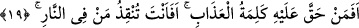
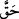
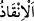

Mesnevî’de der ki:
O gizli kulağın pamuğu, baş kulağıdır.
Bu kulak sağır olmadıkça o can kulağı sağırdır.
Fakir (Bursevî)’nin de şöyle bir beyti vardır:
Gönül kulağındaki pamuğu çıkarsan
Bülbülün sesi sana ulaşır.
“İşte Allah’ın doğru yola” hak dîne ve o dinin güzellikleriyle bezenmeye “ilettiği
kimseler onlardır.” Bu güzel sıfatlarla tavsif edilen kimselerdir. “Gerçek akıl sâhipleri
de onlardır.” Vehmin karşı koymasından ve hevânın çekişmesinden selâmete ermiş akıl
sâhipleri, hidâyete lâyık olanlar başkaları değil onlardır.
Bu sözde, hidayetin yüce Allah’ın fiili ile meydana geldiğine, nefsin de bunu kabul
ettiğine, yâni hidayette normal olarak kulun da bir kesbinin bulunduğuna delâlet vardır.
Yine burada bu topluluğun eşyânın kabuklarından geçip hakîkatlerinin özlerine ulaşan
kimseler olduklarına işâret vardır.
19. (Rasûlüm!) Hakkında azap hükmü gerçekleşmiş kimseyi ve ateşte olanı sen
mi kurtaracaksın!
Tağuta ibâdetten kaçınanların durumu beyân edildikten sonra bu âyette ise Tağuta
kulluk edenlerin durumu açıklanmaktadır.
(Âyetin başındaki) hemze istifhâm-ı inkârî içindir. “__WORD__ vâcib ve sâbit oldu
mânâsındadır. “Azab kelimesi/hükmü” ise Allah Teâlâ’nın İblis’e hitâben söylediği
“Cehennemi kesinlikle, sen ve sana tâbi olanlarla dolduracağım!” (Sâd, 38/85)
sözüdür. İnkar/red anlamını pekiştirmek için hemze, cümlenin cezâ (şartın cevabı)
kısmında tekrar edilmiştir. İnkârı ve imkânsız görmeyi daha fazla kuvvetlendirmek için
“onu” zamiri kullanılacak yerde “ateşte olanı” ifâdesi kullanılmıştır. Yine burada,
hakkında azab hükmü verilen kimsenin ateşe/cehenneme düşmüş mesabesinde olduğuna
ve Hz. Peygamber (a.s.)’ın onları îmâna dâvet etmesinin onları ateşten kurtarma gayreti
olduğuna dikkat çekilmiştir. Çünkü el-Müfredât’ta geçtiği gibi “__WORD__ bir tehlikeden
kurtarmak demektir.
Mânâ şöyledir: ‘Ey Muhammed, insanların işlerinin mâliki sen misin ki Allah
Teâlâ’nın adâletinin gereği ilminde azâb kelimesi/hükmü vâcib, yâni sâbit olan kâfiri
sen mi kurtaracaksın?’ Buna göre âyet şart ve cezâdan/şartın cevâbından meydana gelen